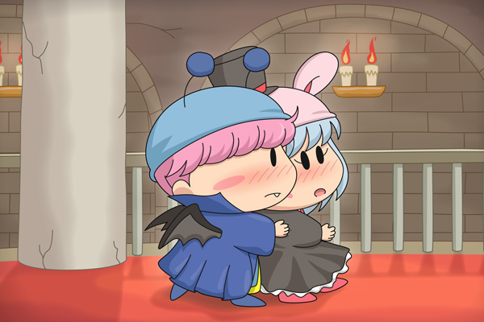

ムルモ「パピィの血を吸わせろでしゅ」
パピィ「もう！ あたちの血は猛毒なんだから
ムルモ死んじゃうって何度も言ってるでちょ」
ムルモ「きー！ そう言われると余計に吸いたくなるでしゅ。
吸血鬼のボクの血がうずくでしゅ～！！」
パピィ「絶対ダメ！！！
…でもこうしてムルモのそばにいられるのは幸せかも^^」
ムルモ「ん？何か言ったでしゅか？」
パピィ「！！
し、し、幸せだなんて一言も言ってないんだからね！」
ようやくラストのお題に到達しました。第１０回目のお題は「後ろから抱きしめる」。
最後はムルパピで締めよう、と始めた頃から思っていましたが、このお題をいざ描こうとすると難しいことに気が付きました(^^;。なので、普段とは違った設定が欲しくて、夏田みかんさんによる吸血鬼ムルモ＆魔女姫パピィの設定をお借りいたしました。
魔女姫パピィの血は猛毒設定なのですが、好きな相手には和らぐ絶妙な設定。大好きなムルモ相手なら猛毒も和らぐはずですが、自分の好きという気持ちが本物なのか確信を持てないパピィはムルモに吸わせることができず…。そういえばムルモに血を吸われた女の子はどうなってしまうんだろう？
絵の方は「ぼかし機能」を盛大に使ったので、PCの動作が重くて大変…。背景は魔女姫の屋敷をイメージしてみました。西洋の屋敷がよくわからなかったので、『悪魔城ドラキュラ』というゲームの画面を参考にしました。
これにてお題は完了です。近々また別のお題にも挑戦したいと思います。
(2013/6/26)